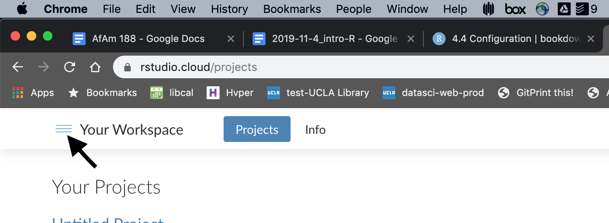

African American Studies 188: Intro to R & Mapping in R
2019-11-27
AFAM 188: R 1 Prerequisites
Before the first class on Oct. 4 get a RStudio Cloud account and take thee R primers on RStudio Cloud.
Go to https://rstudio.cloud and create an account. Use your email account associated with the campus google account (the one with the
@g.ucla.eduas it’s base).Once logged in, you can navigate to the primers, by clicking the menu toggle icon:

Then select the Primers menu item:
Take the primer “The Basics”, which has two tutorials named “Visualization Basics” and “Programming Basics”. These will take you about between an 1.5 or 2.0 hours.